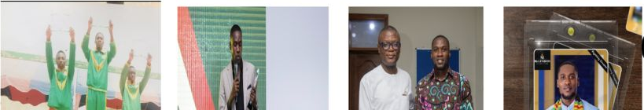
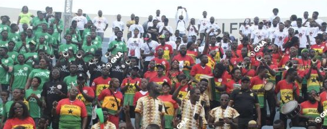
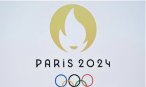

Iowa Hawkeye Athletics
College athletics data analytics, technology support, asset management, and operations.
Sport / Research / Data / Impact
Exploring the intersection of college athletics, research, data analytics, global sport, and student-athlete development through projects, experiences, and ideas focused on creating meaningful impact through sport.
About
Focused on using sport to create opportunities and lasting impact. My work spans student-athlete development, career readiness, international student-athletes, sport policy, youth development, data analytics, event operations, and global sport.
Organizations
College athletics data analytics, technology support, asset management, and operations.
Graduate teaching, Sport & Recreation Management, research, and campus leadership.
Graduate Student Senator representing student voices and shared governance.
McLendon Scholar in a national sport leadership development network.
Scholar and mentee within a sport sociology research and mentorship community.
Assistant Protocol Officer and Research Associate in sport policy and development.
Executive assistance, logistics coordination, and international event operations.
Founder of a youth sport initiative focused on education and community opportunity.
Protocol, logistics, and coordination experience across a 54-nation multisport event.
Research, operations, and sport-development experience in adaptive sport contexts.
Youth engagement connected to football, mental health, well-being, and global sport impact.
Personal Guide
Curated from the portfolio profile
Emmanuel Mensah's story moves from Ghana to global sport, research, Division I athletics, and data. His work focuses on using sport to create opportunity, strengthen systems, and improve the student-athlete experience.
Selected Work
Research on institutional career-development support, university belonging, and career readiness among NCAA Division I international student-athletes.
Discuss ProjectResearch examining school-based athlete transition failure and its economic consequences for football and athletics development in Ghana.
Discuss ProjectData analytics, asset management, workforce analytics, IT operations, and related technology work within NCAA Division I athletics.
Discuss ProjectProfessional experience supporting one of Africa's largest multisport events, including protocol, logistics, and coordination across international delegations.
View ExperienceA youth sport initiative centered on education, development, community opportunity, and the role sport can play in building futures.
Discuss ProjectYouth-centered sport engagement connected to football, mental health, well-being, and global conversations about opportunity through sport.
Discuss ProjectConferences & Events

Images transferred from the earlier Google portfolio showing Emmanuel across sport, leadership, and professional settings.

Experience connected to one of Africa's largest multisport events, with protocol, logistics, and delegation coordination.

Global sport interests connected to event operations, sport development, and international sport leadership.
Experience
IT Student Associate focused on data analytics, technology support, asset management, and operations.
Supporting Sport & Recreation Management instruction while serving as a Graduate Student Senator.
Developing within national sport leadership and research networks committed to future industry impact.
Assistant Protocol Officer and Research Associate supporting policy, protocol, and sport-development work.
Executive Assistant and Logistics Project Coordinator across major sport events and international operations.
Founded a youth sport initiative focused on community engagement, education, and development through sport.
Research & Tools
Mixed methods research · Quantitative research · Qualitative research · Survey design · Literature reviews · Academic writing · Data collection · Thematic analysis
Data analytics · Microsoft Excel · Data visualization · Dashboard development · Asset/data management · IT operations
College athletics · Student-athlete development · Career readiness · Sport for development · Youth sport · International sport · Event operations
Expertise
Student-athlete development, career readiness, and systems that support life after sport.
Research communication, sport policy, international student-athlete experience, and academic inquiry.
Data-informed decision support, dashboards, workforce analytics, and athletic operations insight.
International sport, event operations, cross-cultural communication, and sport diplomacy.
Sport for social impact, education, community pathways, and opportunity creation through sport.
Project management, public speaking, stakeholder engagement, and research translation.
Contact
Iowa City, Iowa, USA · Originally from Ghana